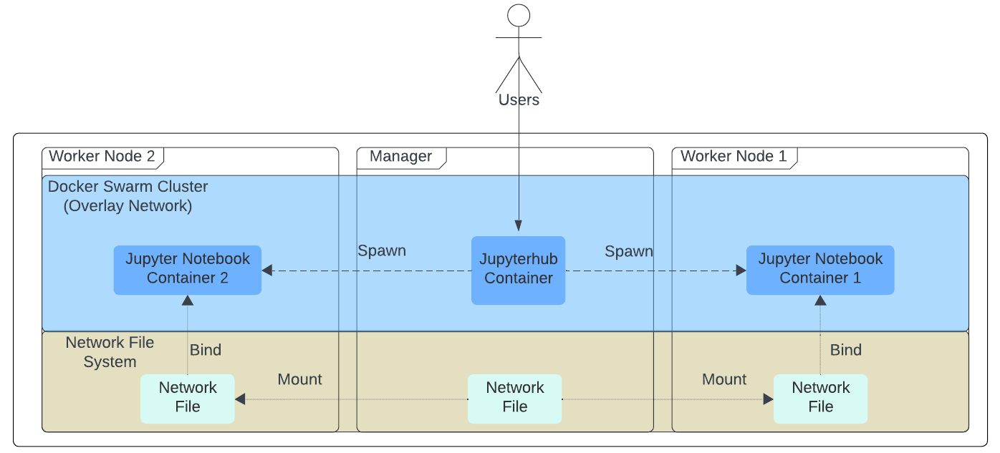

In diesem Abschnitt werden Sie das Network File System (NFS) auf Ihren virtuellen Maschinen installieren. Diese Anwendung ermöglicht den automatischen Austausch von Dateien. Mit dieser Applikation können die VMs beliebige Dateien untereinander austauschen. Die Aufgaben, die von den Studierenden bearbeitet werden, sowie alle anderen aufgabenbezogenen Dateien können mithilfe von NFS übertragen werden. Solange ein Container für die Programmierumgebung gestartet wird, wird dieses NFS-System automatisch mit diesem Container verbunden, sodass die benötigten Dateien immer im richtigen Container vorhanden sind.
Dieses Abschnitt gliedert sich in folgende Abschnitte: